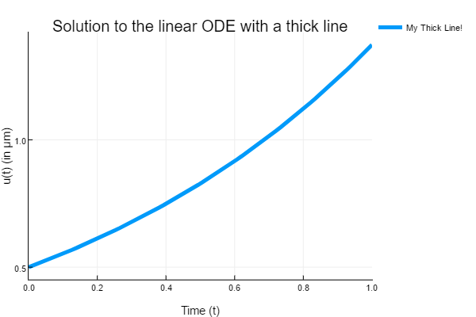

Ordinary Differential Equations
This tutorial will introduce you to the functionality for solving ODEs. Other introductions can be found by checking out DiffEqTutorials.jl.
Example 1 : Solving Scalar Equations
In this example we will solve the equation
on the time interval $t\in[0,1]$ where $f(t,u)=αu$. We know by Calculus that the solution to this equation is $u(t)=u₀\exp(αt)$.
The general workflow is to define a problem, solve the problem, and then analyze the solution. The full code for solving this problem is:
using DifferentialEquations
f(t,u) = 1.01*u
u0=1/2
tspan = (0.0,1.0)
prob = ODEProblem(f,u0,tspan)
sol = solve(prob,Tsit5(),reltol=1e-8,abstol=1e-8)
using Plots
plot(sol,linewidth=5,title="Solution to the linear ODE with a thick line",
xaxis="Time (t)",yaxis="u(t) (in μm)",label="My Thick Line!") # legend=false
plot!(sol.t, t->0.5*exp(1.01t),lw=3,ls=:dash,label="True Solution!")where the pieces are described below.
Step 1: Defining a Problem
To solve this numerically, we define a problem type by giving it the equation, the initial condition, and the timespan to solve over:
using DifferentialEquations
f(t,u) = 1.01*u
u0=1/2
tspan = (0.0,1.0)
prob = ODEProblem(f,u0,tspan)Note that DifferentialEquations.jl will choose the types for the problem based on the types used to define the problem type. For our example, notice that u0 is a Float64, and therefore this will solve with the dependent variables being Float64. Since tspan = (0.0,1.0) is a tuple of Float64's, the independent variables will be solved using Float64's (note that the start time and end time must match types). You can use this to choose to solve with arbitrary precision numbers, unitful numbers, etc. Please see the notebook tutorials for more examples.
The problem types include many other features, including the ability to define mass matrices and hold callbacks for events. Each problem type has a page which details its constructor and the available fields. For ODEs, the appropriate page is here. In addition, a user can specify additional functions to be associated with the function in order to speed up the solvers. These are detailed at the performance overloads page.
Step 2: Solving a Problem
Controlling the Solvers
After defining a problem, you solve it using solve.
sol = solve(prob)The solvers can be controlled using the available options are described on the Common Solver Options manual page. For example, we can lower the relative tolerance (in order to get a more correct result, at the cost of more timesteps) by using the command reltol:
sol = solve(prob,reltol=1e-6)There are many controls for handling outputs. For example, we can choose to have the solver save every 0.1 time points by setting saveat=0.1. Chaining this with the tolerance choice looks like:
sol = solve(prob,reltol=1e-6,saveat=0.1)More generally, saveat can be any collection of time points to save at. Note that this uses interpolations to keep the timestep unconstrained to speed up the solution. In addition, if we only care about the endpoint, we can turn off intermediate saving in general:
sol = solve(prob,reltol=1e-6,save_everystep=false)which will only save the final time point.
Choosing a Solver Algorithm
DifferentialEquations.jl has a method for choosing the default solver algorithm which will find an efficient method to solve your problem. To help users receive the right algorithm, DifferentialEquations.jl offers a method for choosing algorithms through hints. This default chooser utilizes the precisions of the number types and the keyword arguments (such as the tolerances) to select an algorithm. Additionally one can provide alg_hints to help choose good defaults using properties of the problem and necessary features for the solution. For example, if we have a stiff problem where we need high accuracy, but don't know the best stiff algorithm for this problem, we can use:
sol = solve(prob,alg_hints=[:stiff],reltol=1e-8,abstol=1e-8)You can also explicitly choose the algorithm to use. DifferentialEquations.jl offers a much wider variety of solver algorithms than traditional differential equations libraries. Many of these algorithms are from recent research and have been shown to be more efficient than the "standard" algorithms. For example, we can choose a 5th order Tsitouras method:
sol = solve(prob,Tsit5())Note that the solver controls can be combined with the algorithm choice. Thus we can for example solve the problem using Tsit5() with a lower tolerance via:
sol = solve(prob,Tsit5(),reltol=1e-8,abstol=1e-8)In DifferentialEquations.jl, some good "go-to" choices for ODEs are:
BS3()for fast low accuracy non-stiff.Tsit5()for standard non-stiff. This is the first algorithm to try in most cases.Vern7()for high accuracy non-stiff.Rodas4()for stiff equations with Julia-defined types, events, etc.radau()for really high accuracy stiff equations (requires installing ODEInterfaceDiffEq.jl)
For a comprehensive list of the available algorithms and detailed recommendations, Please see the solver documentation. Every problem type has an associated page detailing all of the solvers associated with the problem.
Step 3: Analyzing the Solution
Handling the Solution Type
The result of solve is a solution object. We can access the 5th value of the solution with:
sol[5] #.637or get the time of the 8th timestep by:
sol.t[8] #.438Convenience features are also included. We can build an array using a comprehension over the solution tuples via:
[t+u for (t,u) in tuples(sol)]or more generally
[t+2u for (t,u) in zip(sol.t,sol.u)]allows one to use more parts of the solution type. The object that is returned by default acts as a continuous solution via an interpolation. We can access the interpolated values by treating sol as a function, for example:
sol(0.45) # The value of the solution at t=0.45Note the difference between these: indexing with [i] is the value at the ith step, while (t) is an interpolation at time t!
If in the solver dense=true (this is the default unless saveat is used), then this interpolation is a high order interpolation and thus usually matches the error of the solution time points. The interpolations associated with each solver is detailed at the solver algorithm page. If dense=false (unless specifically set, this only occurs when save_everystep=false or saveat is used) then this defaults to giving a linear interpolation.
For details on more handling the output, see the solution handling page.
Plotting Solutions
While one can directly plot solution time points using the tools given above, convenience commands are defined by recipes for Plots.jl. To plot the solution object, simply call plot:
#Pkg.add("Plots") # You need to install Plots.jl before your first time using it!
using Plots
#plotly() # You can optionally choose a plotting backend
plot(sol)
If you are in Juno, this will plot to the plot pane. To open an interactive GUI (dependent on the backend), use the gui command:
gui()The plot function can be formatted using the attributes available in Plots.jl. Additional DiffEq-specific controls are documented at the plotting page.
For example, from the Plots.jl attribute page we see that the line width can be set via the argument linewidth. Additionally, a title can be set with title. Thus we add these to our plot command to get the correct output, fix up some axis labels, and change the legend (note we can disable the legend with legend=false) to get a nice looking plot:
plot(sol,linewidth=5,title="Solution to the linear ODE with a thick line",
xaxis="Time (t)",yaxis="u(t) (in μm)",label="My Thick Line!") # legend=falseWe can then add to the plot using the plot! command:
plot!(sol.t,t->0.5*exp(1.01t),lw=3,ls=:dash,label="True Solution!")
Example 2: Solving Systems of Equations
In this example we will solve the Lorenz equations:
Defining your ODE function to be in-place updating can have performance benefits. What this means is that, instead of writing a function which outputs its solution, you write a function which updates a vector that is designated to hold the solution. By doing this, DifferentialEquations.jl's solver packages are able to reduce the amount of array allocations and achieve better performance.
The way we do this is we simply write the output to the 3rd input of the function. For example, our Lorenz equation problem would be defined by the function:
function lorenz(t,u,du)
du[1] = 10.0(u[2]-u[1])
du[2] = u[1]*(28.0-u[3]) - u[2]
du[3] = u[1]*u[2] - (8/3)*u[3]
endand then we can use this function in a problem:
u0 = [1.0;0.0;0.0]
tspan = (0.0,100.0)
prob = ODEProblem(lorenz,u0,tspan)
sol = solve(prob)Using the plot recipe tools defined on the plotting page, we can choose to do a 3D phase space plot between the different variables:
plot(sol,vars=(1,2,3))
Note that the default plot for multi-dimensional systems is an overlay of each timeseries. We can plot the timeseries of just the second component using the variable choices interface once more:
plot(sol,vars=(0,2))
Note that here "variable 0" corresponds to the dependent variable ("time").
Defining Systems of Equations Using ParameterizedFunctions.jl
To simplify your life, the @ode_def macro allows for "defining your ODE in pseudocode" and getting a function which is efficient and runnable.
To use the macro, you write out your system of equations with the left-hand side being d_ and those variables will be parsed as the dependent variables. The independent variable is t, and the other variables are parameters which you pass at the end. For example, we can write the Lorenz system as:
g = @ode_def LorenzExample begin
dx = σ*(y-x)
dy = x*(ρ-z) - y
dz = x*y - β*z
end σ=>10.0 ρ=>28.0 β=(8/3)DifferentialEquations.jl will automatically translate this to be exactly the same as f. The result is more legible code with no performance loss. The result is that g is a function which you can now use to define the Lorenz problem.
u0 = [1.0;0.0;0.0]
tspan = (0.0,1.0)
prob = ODEProblem(g,u0,tspan)Since we used =>, σ and ρ are kept as mutable parameters. For example we can do:
g.σ = 11.0to change the value of σ to 11.0. β is not able to be changed since we defined it using =. We can create a new instance with new parameters via the name used in the @ode_def command:
h = LorenzExample(σ=11.0,ρ=25.0)Note that the values will default to the values given to the @ode_def command.
ParameterizedFunctions.jl does "behind-the-scenes" symbolic calculations to pre-compute things like the Jacobian, inverse Jacobian, etc. in order to speed up calculations. Thus not only will this lead to legible ODE definitions, but "unfairly fast" code! We can turn off some of the calculations by using a more specific macro. Here, we can turn off the Jacobian inversion calculations via @ode_def_noinvjac. See ParameterizedFunctions.jl for more details.
Since the parameters exist within the function, functions defined in this manner can also be used for sensitivity analysis, parameter estimation routines, and bifurcation plotting. This makes DifferentialEquations.jl a full-stop solution for differential equation analysis which also achieves high performance.
Example 3: Using Other Types for Systems of Equations
DifferentialEquations.jl can handle many different dependent variable types (generally, anything with a linear index should work!). So instead of solving a vector equation, let's let u be a matrix! To do this, we simply need to have u0 be a matrix, and define f such that it takes in a matrix and outputs a matrix. We can define a matrix of linear ODEs as follows:
A = [1. 0 0 -5
4 -2 4 -3
-4 0 0 1
5 -2 2 3]
u0 = rand(4,2)
tspan = (0.0,1.0)
f(t,u) = A*u
prob = ODEProblem(f,u0,tspan)Here our ODE is on a 4x2 matrix, and the ODE is the linear system defined by multiplication by A. To solve the ODE, we do the same steps as before.
sol = solve(prob)
plot(sol)
We can instead use the in-place form by using Julia's in-place matrix multiplication function A_mul_B!:
f(t,u,du) = A_mul_B!(du,A,u)Additionally, we can use non-traditional array types as well. For example, StaticArrays.jl offers immutable arrays which are stack-allocated, meaning that their usage does not require any (slow) heap-allocations that arrays normally have. This means that they can be used to solve the same problem as above, with the only change being the type for the initial condition and constants:
using StaticArrays, DifferentialEquations
A = @SMatrix [ 1.0 0.0 0.0 -5.0
4.0 -2.0 4.0 -3.0
-4.0 0.0 0.0 1.0
5.0 -2.0 2.0 3.0]
u0 = @SMatrix rand(4,2)
tspan = (0.0,1.0)
f(t,u) = A*u
prob = ODEProblem(f,u0,tspan)
sol = solve(prob)
using Plots; plot(sol)Note that the analysis tools generalize over to systems of equations as well.
sol[4]still returns the solution at the fourth timestep. It also indexes into the array as well. The last value is the timestep, and the beginning values are for the component. This means
sol[5,3]is the value of the 5th component (by linear indexing) at the 3rd timepoint, or
sol[2,1,:]is the timeseries for the component which is the 2nd row and 1 column.
Going Beyond ODEs: How to Use the Documentation
Not everything can be covered in the tutorials. Instead, this tutorial will end by pointing you in the directions for the next steps.
Common API for Defining, Solving, and Plotting
One feature of DifferentialEquations.jl is that this pattern for solving equations is conserved across the different types of differential equations. Every equation has a problem type, a solution type, and the same solution handling (+ plotting) setup. Thus the solver and plotting commands in the Basics section applies to all sorts of equations, like stochastic differential equations and delay differential equations. Each of these different problem types are defined in the Problem Types section of the docs. Every associated solver algorithm is detailed in the Solver Algorithms section, sorted by problem type. The same steps for ODEs can then be used for the analysis of the solution.
Additional Features and Analysis Tools
In many cases, the common workflow only starts with solving the differential equation. Many common setups have built-in solutions in DifferentialEquations.jl. For example, check out the features for:
Handling, parallelizing, and analyzing large Monte Carlo experiments
Saving the output to tabular formats like DataFrames and CSVs
Many more are defined in the relevant sections of the docs. Please explore the rest of the documentation, including tutorials for getting started with other types of equations. In addition, to get help, please either file an issue at the main repository or come have an informal discussion at our Gitter chatroom.